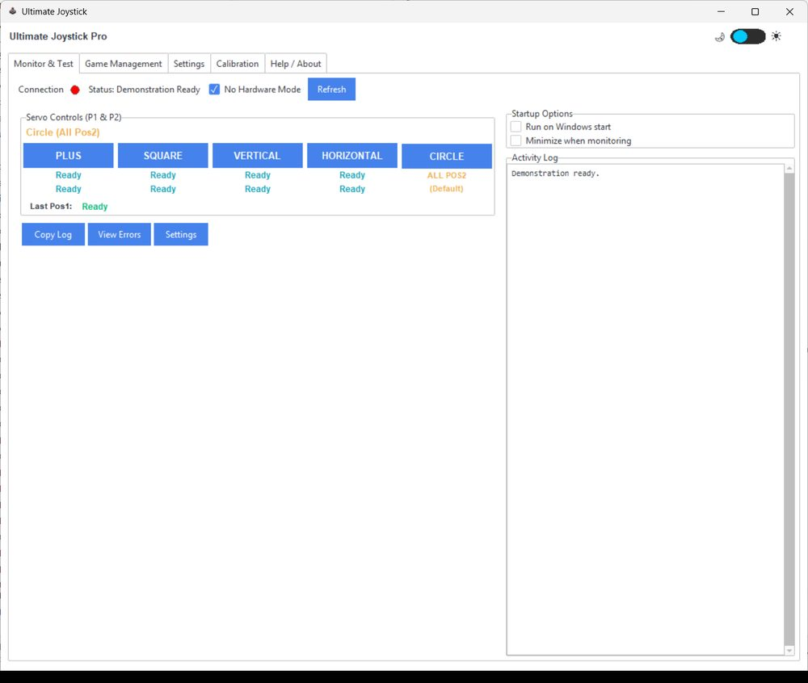
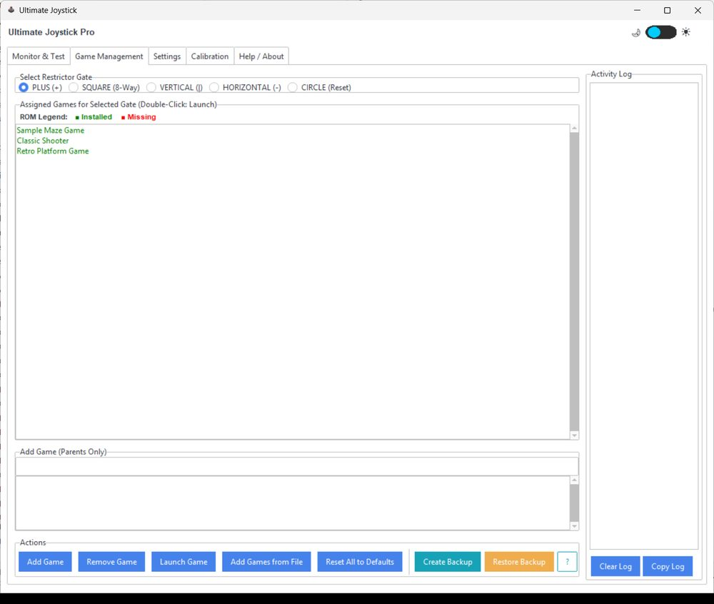
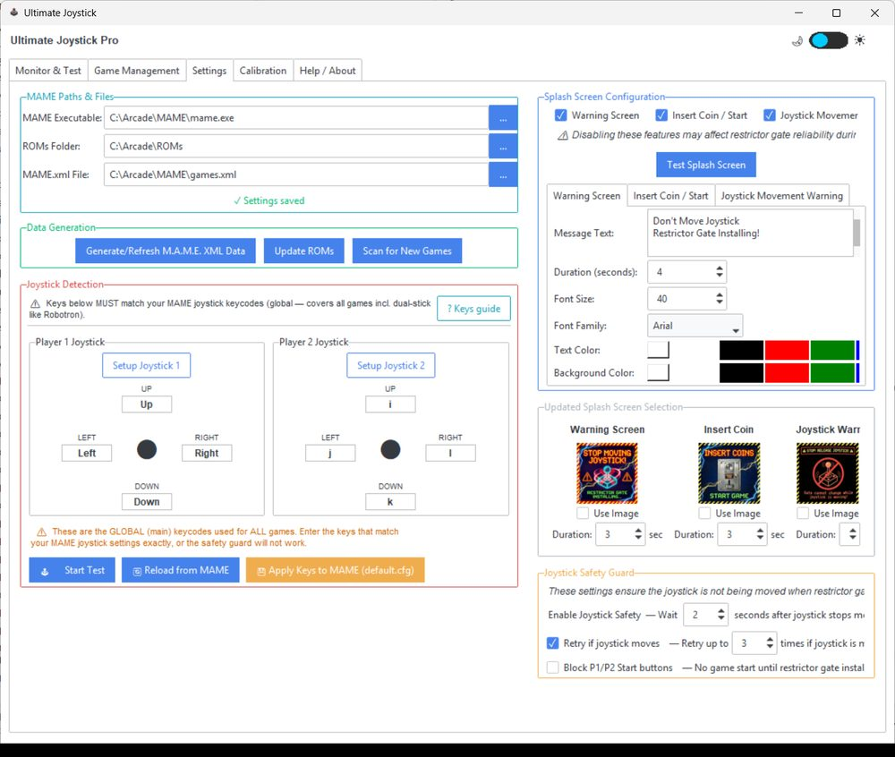
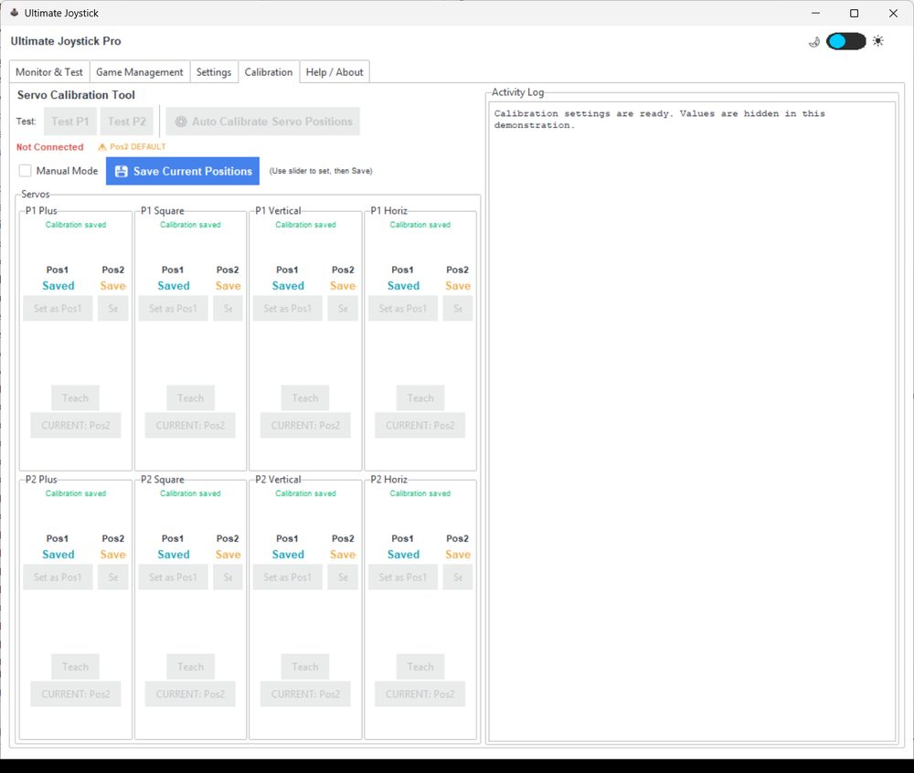
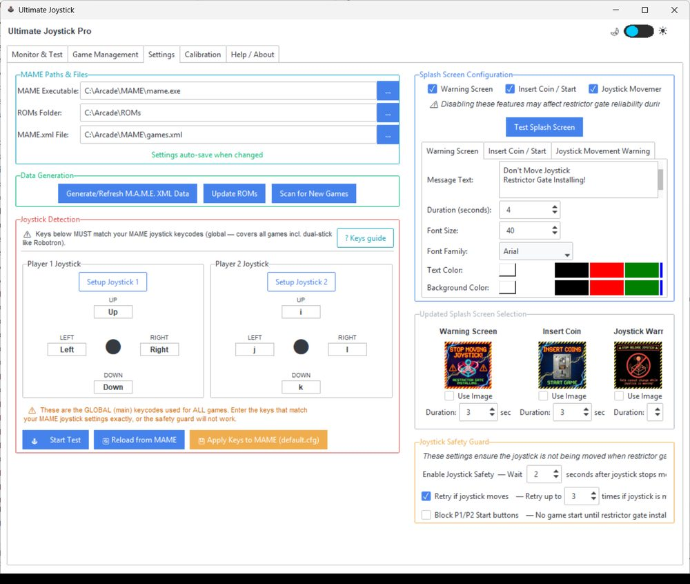
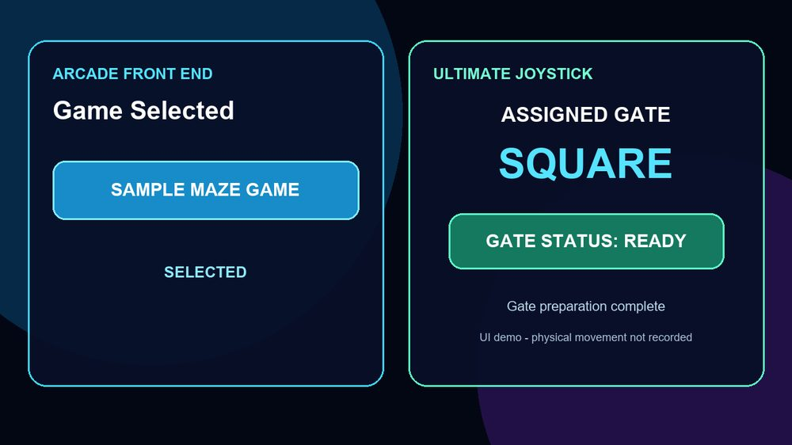

Plug it in
Drop the joystick into your panel like any arcade stick, connect the Arduino Mega board to a USB port, and the servo harness to the board. That is the hardware install.
No more ghost moves when playing your favorite games. Imagine playing a game: you go to move the joystick, and it floats into a different direction. Those days are gone—welcome to the new era with Ultimate Joystick Restrictor Gate System. Made for the enthusiast to easily use and enjoy all the classic arcade games that started the gaming revolution, it comes pre-installed with over 2,800 pre-mapped games with minimal setup. Works with any frontend, so just select the game, and the restrictor gate is automatically installed. You can also add and remove games, and control the splash screen, right from the software. Want to know for sure? Check out the video demo!
A game is picked from the frontend, the plate swings, the stick is ready before the title screen. Footage of the shipping hardware is being filmed now.
Real hardware footage lands here.
Until then, the animation below shows exactly what the plates do, and the video guides show the software driving them.
No soldering, no scripting, no frontend plugins. The servos arrive wired, the board arrives flashed, and the software already knows over 2,800 games. Every other game gets a baseline gate, and you can add your own games from your own ROMs and the MAME XML created during setup (we do not supply ROMs).
Drop the joystick into your panel like any arcade stick, connect the Arduino Mega board to a USB port, and the servo harness to the board. That is the hardware install.
Open the app, click Browse twice: your MAME executable, then your ROM folder. You supply the ROMs you already own; we supply the mapping of every game to its gate.
Press Start Monitoring once. From then on, launch games the way you always do. The app spots MAME starting, reads the game, and sets the gate before the title screen fades.
It watches MAME itself, not your menu, so there is nothing to install inside your front end, and front-end updates do not change how it works.
Each gate is a hinged plate with its own servo. When a game starts, the plate that is in swings out and the plate that game needs swings in, one servo at a time, under the stick.
These are real screens from the shipping software. Every tab is shown in the video guides.






Yes. Ultimate Joystick ships the game-to-gate mapping for over 2,800 titles and the control software. Every other game gets a baseline gate, and you can add your own games from your own ROMs and the MAME XML created during setup. It does not include any game ROMs. You use the MAME ROM files you already own, and you point the app at that folder once during setup.
All popular MAME front ends are supported, as well as a batch file or MAME on its own. The app watches the MAME process itself, so there is nothing to install inside your frontend.
Plug the controller into a USB port, open the app, click Browse to select your MAME executable and your ROM folder, and start monitoring. The servos arrive wired, the board arrives flashed and the unit arrives pre-calibrated, so there is no calibration step at setup. Calibration is only needed if you ever replace a servo.
The app recognises the game, looks up its gate, swings the current plate out and the new plate in, one servo at a time, and shows a full-screen notice while it moves. When nothing is running the stick rests on the free-circle gate.
The app will not move a plate while it sees the joystick being used. It shows a hands-clear notice, waits, retries, and if the stick is still being held it gives up with a visible message rather than fight you.
Yes. Search the game in the Game Management tab, pick a gate shape, save. Every one of the pre-mapped titles can be overridden, and new games can be added the same way.
A Windows PC running MAME, one free USB port, and your ROM files. The control app is a single Windows program; no drivers beyond the standard USB-serial driver are needed.
Full 8-directional perimeter for fighting games, beat-em-ups, and multi-directional shooters. Suited to quarter-circle motions and diagonal dashes.
Strict cardinal-only restriction (Up, Down, Left, Right). Helps avoid accidental diagonals in classic maze and platformer games.
Smooth 360° free circular motion for driving games, dual-stick shooters, flight sims, and spinner-style arcade titles.
Locks movement strictly to Left & Right for paddle games, brick-breakers, and side-to-side shooters with zero vertical drift.
Locks movement strictly to Up & Down for vertical scrolling shooters, climbing games, and elevator-style arcade titles.